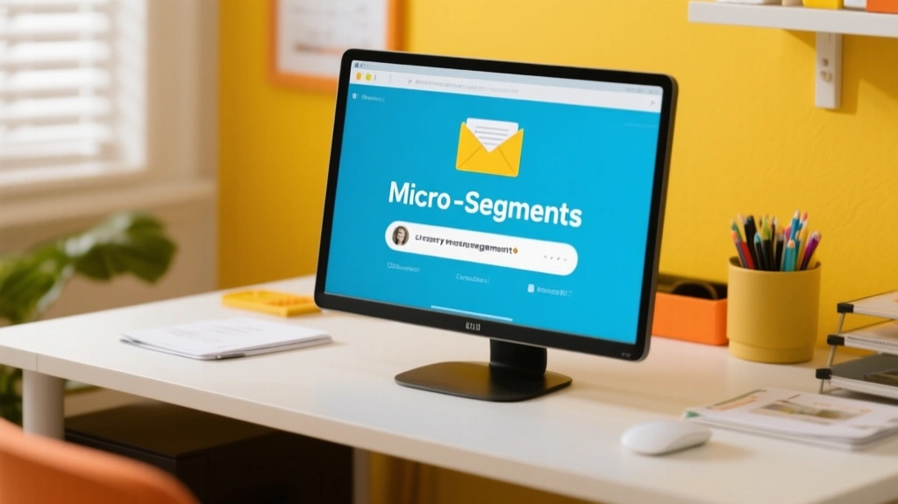

Tiny audiences, big outcomes. When you slice your list into micro-segments by behavior, preference, and timing, you unlock precision that feels personal without becoming invasive. This article shows you how to map micro-niches, test prompts, and measure impact with confidence.

Why micro-segments outperform broad segments
Micro-segments let you tailor subject lines, preheaders, and offers to specific moments in a customer journey — moments that feel relevant, not generic. When you target the right combination of behavior (site visits, cart activity, past purchases) and context (time of day, device, location), you improve open and click-through rates without increasing send volume.
How to craft micro-segments
Start with behavior buckets: recent site visitors, high-intent shoppers, and lapsed buyers. Layer on context: weekday vs weekend, mobile vs desktop, and time-of-day. Use PIQ prompts—Personalize, Incentivize, Qualify—to generate subject lines and body copy that resonate in under 20 seconds of reading.
- Define 3 behavior cohorts (e.g., browsed, added-to-cart, purchased within 7 days).
- Create 2–3 prompts per cohort that foreground a single benefit.
- A/B test subject lines with a 2,000–3,000 sample size per bucket.
Re-engagement prompts that actually resurface interest
Re-engagement isn’t a full reboot; it’s a gentle reminder that your brand respects their time. Use playful but respectful prompts that acknowledge prior activity and invite further action with clear benefits.
Lead with a single value prop and a frictionless next step. If they don’t bite in 3 emails, taper frequency and revisit the micro-segments in 2 weeks.
Prompts should reflect where the subscriber is in their journey. A past purchaser who hasn’t engaged in 30 days might respond to a “you earned this” offer, while a browser who never returned benefits from a “first look at new arrivals” nudge.
Broadcast campaigns feel like a shout into a crowded room—high volume, high fatigue, and variable results.
Micro-segmented prompts paired with behavior-aware timing create relevance and respect, boosting engagement while reducing fatigue.